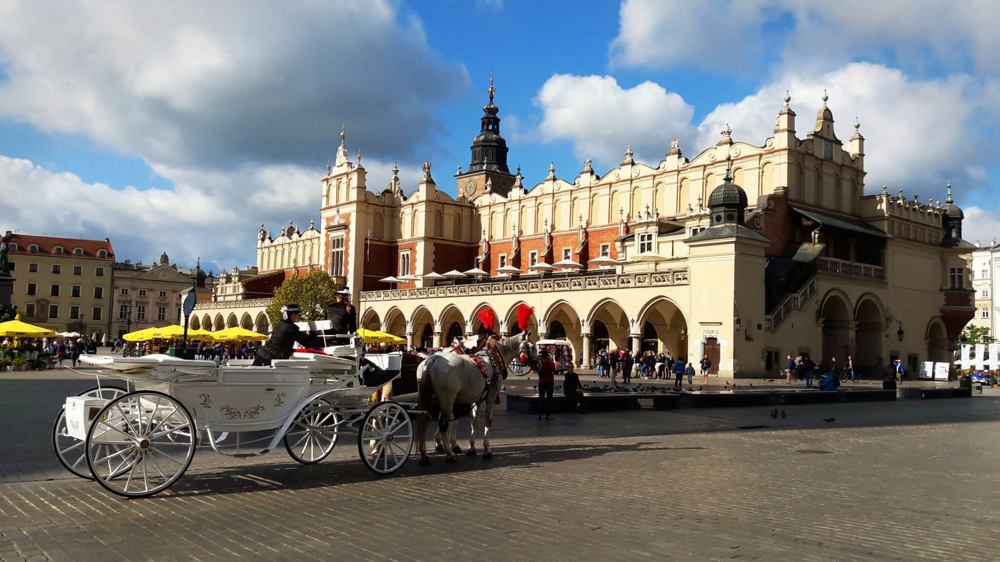
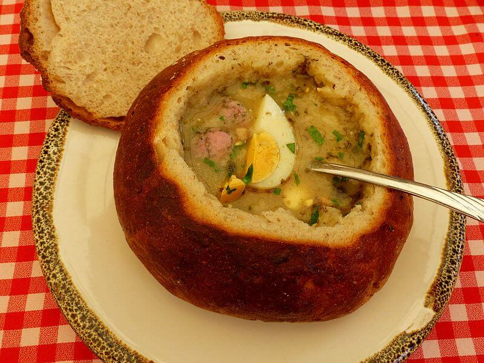
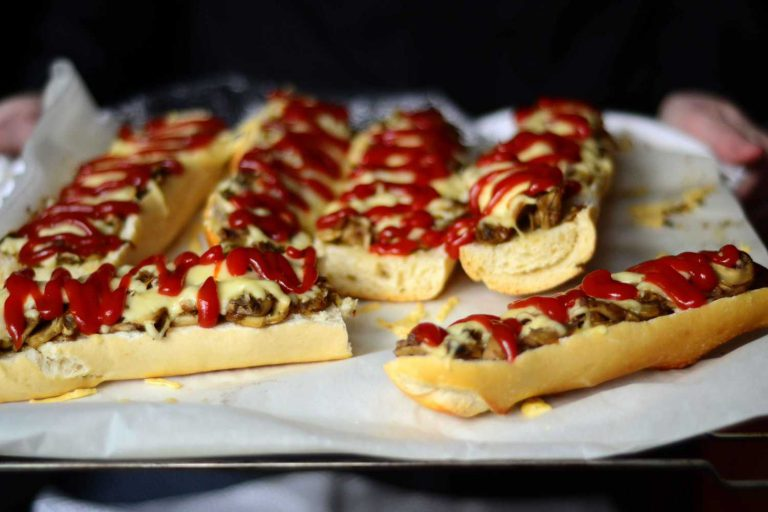

Come with us in our great adventure through Kraków where we took wonderful pictures of everything that is shiny and beautiful! If you don't have the time to explore the city, this might help you decide on what to focus your attention on. Kraków is full of small hidden gems so don't hold back from following your guts (and eyes).
Day 1
Main Market Square (Rynek Główny)
As soon as we arrived in Krakow, we headed to Old Town to visit Main Market Square, the city’s huge central square. Forever a hive of activity at any hour of the day, this over 3700 square meters open space (said to be the largest in Europe!) is composed by a myriad of café’s, museums, pubs, souvenir shops, historical landmarks and all things beautiful architecture.
Main Market Square with the Cloth Hall in center.Some of the restaurants in the Main Square. Great food and great beer.Fancy looking beef tartare. Polish people love meat.Flavour is a big strong but a worthy taste experience of local cuisine.Street leading to the Main Square. Tons of escape rooms for some reason...
Cloth Hall (Sukiennice)
The main building right at the center of the square is the Cloth Hall, where international trade was concentrated. Considered the world's oldest shopping mall, this pearl of Renaissance architecture dates from 1555 and features in its interior many food stalls and small shops, terrace cafes and flower stands that surround the statue of Adam Mickiewicz. If you are in a rush to buy souvenirs, Cloth Hall have your worries covered all in one place.

Cloth Hall. You can have yourself a romantic tour around the Square on a carriage.Cloth Hall shops, each selling a taste of Poland
St. Mary’s Basilica (Kościół Mariacki)
Right at the center of Old Town, on a corner of the Main Square, is the St. Mary’s Basilica, one of the most famous of Poland's many churches. This Gothic structure features two striking towers of different heights and is surprisingly richly decorated inside, thanks to the vibrant polychromy by polish artist Jan Matejko. In the midst of all this wonder, the central masterpiece is without a doubt the breathtaking main altar, by Veit Stoss, illustrating the life of St. Mary and Jesus.
The Basilica.The breathtakingly decorated Basilica and the main altar.
Rynek Underground (Podziemia Rynku Głównego w Krakowie)
Under the surface of the market square we visited this hi-tech and highly popular museum, which took us four metres below ground and many years into the past, to explore excavated medieval merchant stalls complete with objects, coins, decorations of old, and to experience the contemporary multimedia exhibits that showcase the city’s entire history up until this day. We recommend coming here on your first day to get a good idea of Kraków’s historic hidden gems when wandering the streets.
A display about the neolithic habitants of Kraków’s regionReal structure below the current Cloth Hall, where stalls used to be. You can touch the past!Professions of old.
Day 2
Wawel Royal Castle (Zamek Królewski na Wawelu)
On day 2 we ventured to Wawel Castle. One of the most famous castles in Poland, it’s located on a hill high above the city, and its beautifully restored buildings are a delight to behold. We enjoyed historic architecture from different eras, royal rooms filled with artworks and curious items, a magnificent cathedral and an armory with old treasures (makes you wonder just how many kinds of helmets there are). It even has a dragon’s cave. A fire breathing metal dragon!
Wawel CastleThe Castle's patio with its many arcades, with access to exhibits like the Armoury.View of the Castle from the other side of Vistula river

A traditional soup in a bread bowl. Warm and filling.
Jewish District (Kazmierz)
Continuing our visits through Polish rich history, we walked over to Kazmierz, the center for Jewish life for half a millennia before being destroyed in WW2. Despite its sad story, this now bohemian district has become a major tourist place and a pilgrimage site for Jews, which led to the return of contemporary Jewish culture in the area. Want fashionable little shops? Kazmierz has it. Chic drinks? Kazmierz has it. Visit a synagogue? Kazimierz has multitues of them. A cheap and tasty zapiekanka, a polish open-faced sandwich? Just go to the central square!
Memories of painful days.

Maybe the best cheap food ever? Zapiekanka, for only a few zloty each!Traditional shops and restaurants near the Remuh Synagogue.Street art
Oskar Schindler's Enamel Factory (Fabryka Emalia Oskara Schindlera)
Still confronting Krakow’s grim history, we visited the Oskar Schindler Enamel Factory. From the outside it looks just like an everyday factory, but as soon as we walked in, it transformed into a great museum experience. It is now an exhibition that tells the story about Kraków and its inhabitants during WW2, the Nazis, the Soviets, and also about Oskar Schindler and how he saved thousands of Jews under his employment.
Oskar Schindler's Enamel FactoryEveryday items
Day 3
Auschwitz-Birkenau memorial and museum
The apotheosis of our WW2 revival was visiting the Auschwitz Concentration Camp (Konzentrationslager Auschwitz) and the nearby camp fron the same complex, Birkenau. It was a complex built by Nazi Germany in occupied Poland and is the symbol of the Holocaust. Fences were everywhere, and inside the barracks there is a memorial with items that were stolen from the victims. We also got to see the gas chambers and ovens. Nowadays, the unnatural serenity betrays the horrific events witnessed by it walls. A lady in our group started crying. Everything is preserved as best they can, as to make sure history is remembered in order not to be repeated. Never forget!
Entrance to the Auschwitz Camp 1, the first to be builtMen and women were separated and could only meet behind electrified fences.Entrance to Auschwitz Camp 2 (Birkenau). Over a million souls passed through this gate... but only once.Sausages are a staple of Polish cuisine, though after Auschwitz we had little appetite.
Wieliczka Salt Mine (Kopalnia soli Wieliczka)
Outside of Kraków, but worth the visit, is the Wieliczka Salt Mine. This mine is explored since the Neolithic times and operated commercially until recently, now being transformed into a museum. Its attractions include the shafts and labyrinthine passageways, displays of historic salt-mining technology, an underground brine water lake, four underground chapels (they told us people can totally get married there!) and numerous statues carved by miners out of the rock salt, and even recent sculptures by contemporary artists. Oh, and visitors are welcome to lick the walls. It tasted, well, salty.
Kilometers and kilometers of tunnels held up by wooden supports.The Chapel of St. Kinga. All the "paintings" were sculptured by only 3 miners.Underground salt lake, even saltier than the Dead Sea.